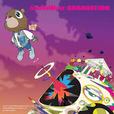

My name is Luke Sprecher. I was born on Sunday October 5th, 2008. I've lived in Medina Ohio for all of my life. I go to Buckeye Highschool and MCCC. At school, I participate in the Buckeye Basketball team and Unified Sports. I enjoy partaking in both because I get to meet new people and explore new places outside my home school. When I'm not involved in school, I fall back on my hobbies to keep my occupied. My hobbies include: Gaming, listening to music, collecting sneakers, and fishing. My favorite hobby to do out of all of these is fishing. I really enjoy fishing because it puts me at ease. I find peace in being out at sea and being apart of nature; along with catching fish of course!
| Category | Favorite | Image |
|---|---|---|
| Food | Orange Chicken | |
| Album | Graduation By Kanye West(Changes alot) |  |
| Video Game | Team Fortress 2 |